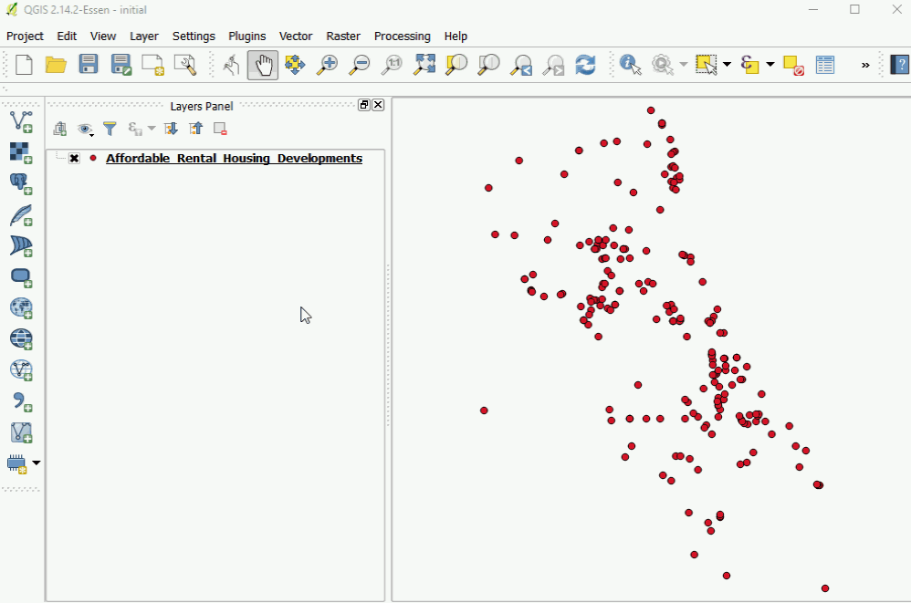
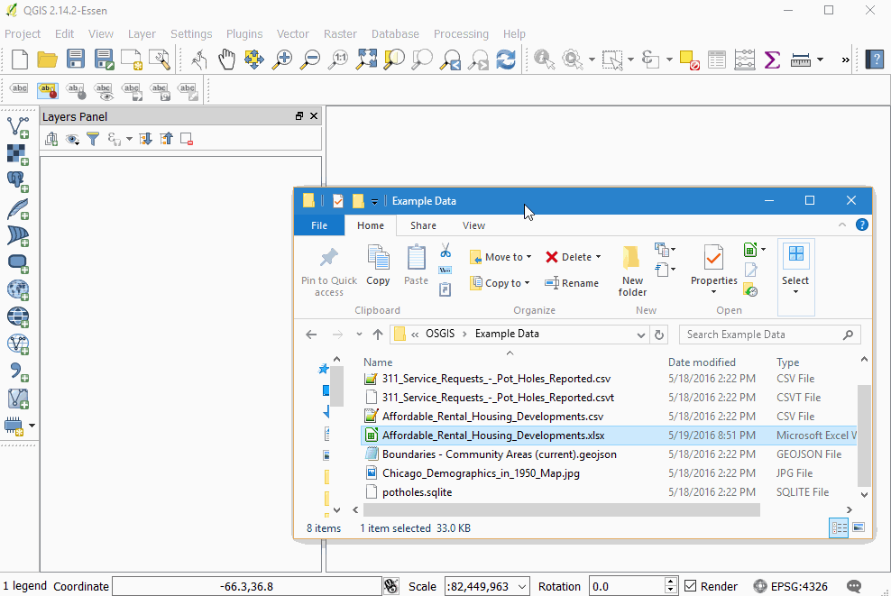
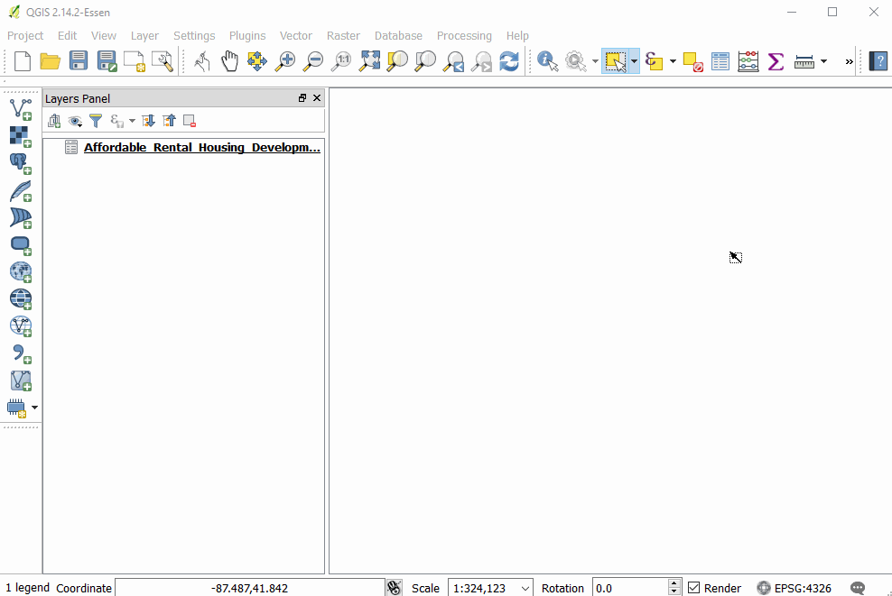
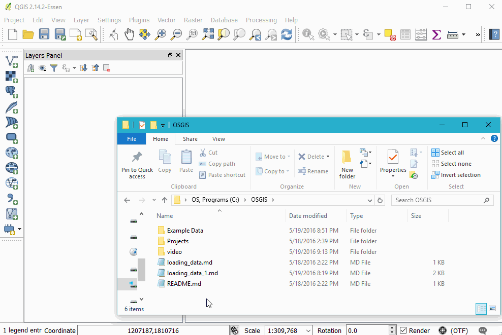
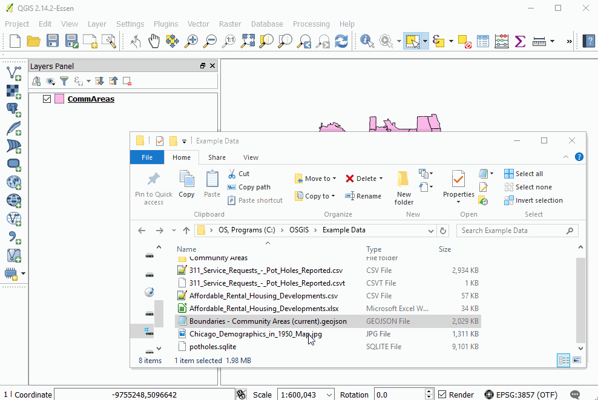

Loading Vector Data
Loading CSV (and other delineated data)
Adding in delimited data

The big comma represents delimited (e.g. "comma" delimited or csv) files
The "create layer" window has a number of format-specific options, such as indicating what delimiter is used, allows users to skip a given number of rows, indicate geometric information present in the table (e.g. auto-detecting latitude and longitude)
Watch a file
Clicking on "Watch file" -- e.g. if you have the file open in another window, QGIS will automatically update the version
Excel(xlsx)
Click and drag from OS browser

Create geometry from columns

Shape Files
Drag and Drop

Add Vector Layer button

Create Spatial Index

GeoJSON
